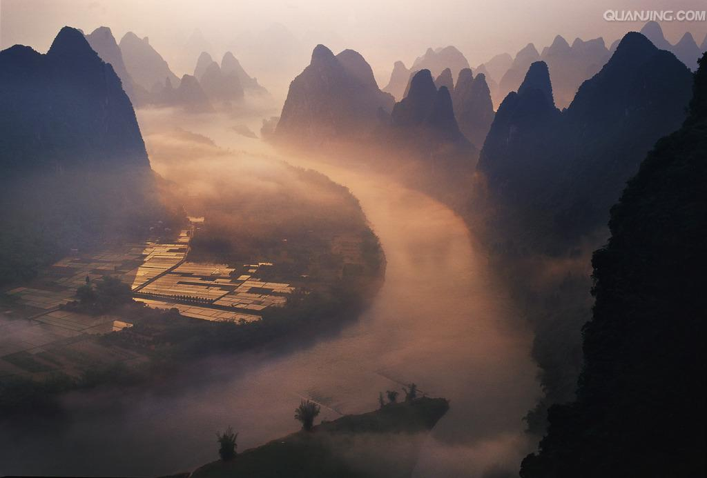
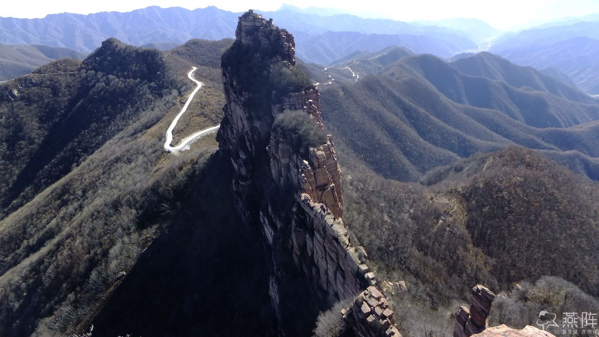
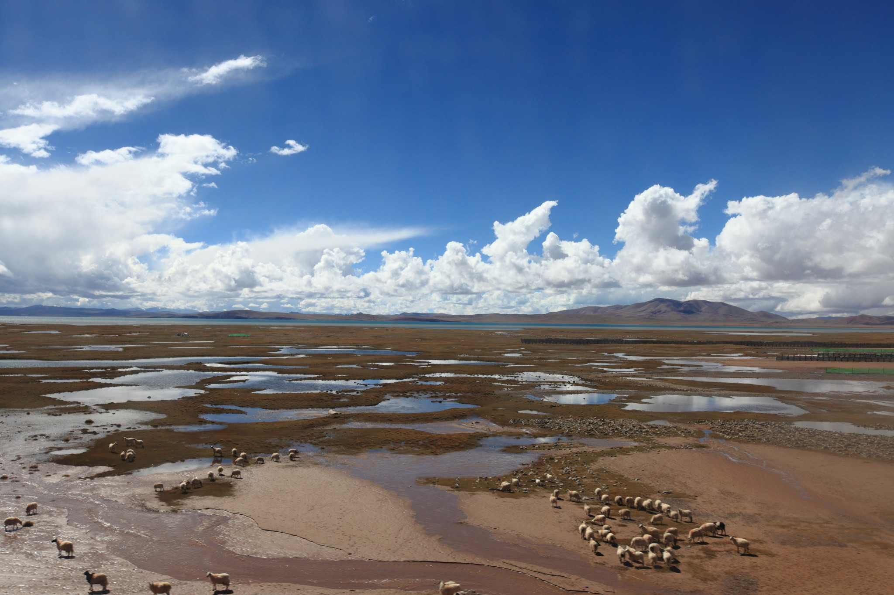

有些地方一定要去


诗意如江南水乡--华东华南
朦胧，宁静，浪漫，多情,在如梦 如幻的风景中，踏出远行的第一步，开始心的旅途

霸气深沉的历史情怀--华北
华北是一个千年的梦，厚重，深沉，大气，恢宏,在
气壮山河的风景中，渐行渐远，开始心的感悟

恢宏壮阔的乐章--塞外西北
西北是一个首的高声歌唱的楚歌，辽阔，苍凉，无边的山脉与豪情壮志在如诗 如歌的风景中，唱出心中所想，忘掉所有城市的疲惫